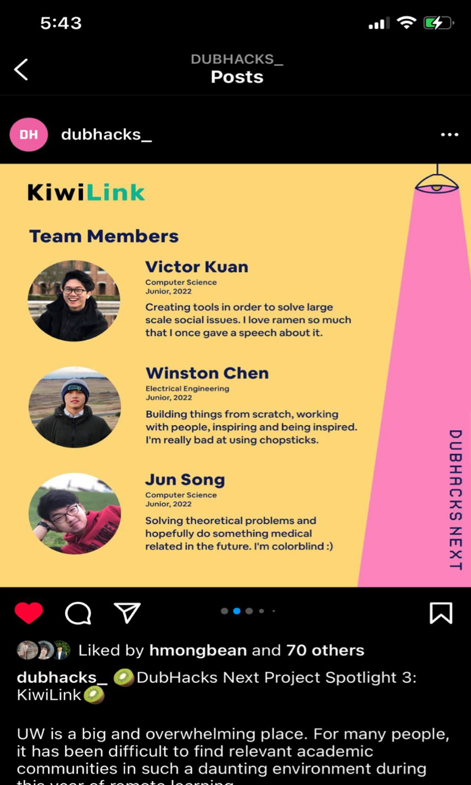

When I reflect and connect the dots looking backwards, I see that KiwiLink has positively affected pretty much everybody involved.

Outcomes affecting UW and its students:
1) Our 2,000+ users were able to connect with 30,000+ relevant virtual study buddies during the pandemic
2) We also helped many of these students find study buddies and gym buddies and roommates
3) Finally, we helped boost club attendance for 10+ clubs at UW by roughly 20%


Outcomes affecting the KiwiLink team members:
1) We won the Google Cloud COVID-19 Hackathon Fund Award in 2020 at the Hack 20 hackathon!!! ($500 award + recognition from Google)
2) We were then recruited by UW’s startup incubator “DubHacks Next,” and there, we were gifted $6500 of AWS credit. We met some awesome friends and mentors (like David Shim, CEO of Foursquare)

3) Our team members continued doing great things post-KiwiLink:
- Jun Song -> Google
- Winston Chen -> UMich PhD
- Oscar Zeng -> Expedia
- Michelle Fu -> Stanford grad school
- Vivian Tran -> JPMorgan
- Me (Victor Kuan) -> UC Berkeley grad school / Jane Street
My personal outcomes: KiwiLink fundamentally changed me
- I gained a lot of experience working on KiwiLink, as I got to learn more about frontend programming, Figma prototyping, user experience interviewing, social media marketing, IP law, and most importantly, product management.
- Yes, thanks to KiwiLink, I fell in love with product management. I love being the center communicator responsible for doing everything it takes to build an amazing and useful product.
- So, thank you @KiwiLink. Now, I am a deeply passionate product manager who cares about edtech and productivity.
- And even more importantly, I’m grateful for KiwiLink, as it has directly and indirectly introduced me to so many quality friends in Seattle and beyond.
1) Our 2,000+ users were able to connect with 30,000+ relevant virtual study buddies during the pandemic
2) We also helped many of these students find study buddies and gym buddies and roommates
3) Finally, we helped boost club attendance for 10+ clubs at UW by roughly 20%